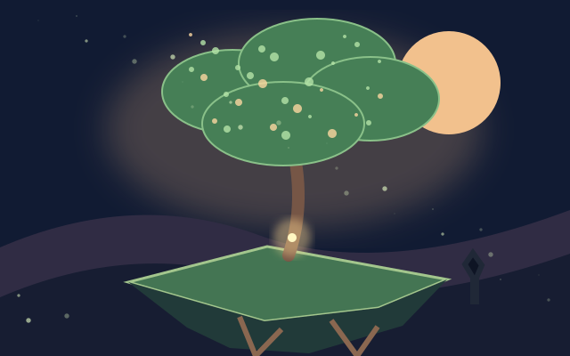
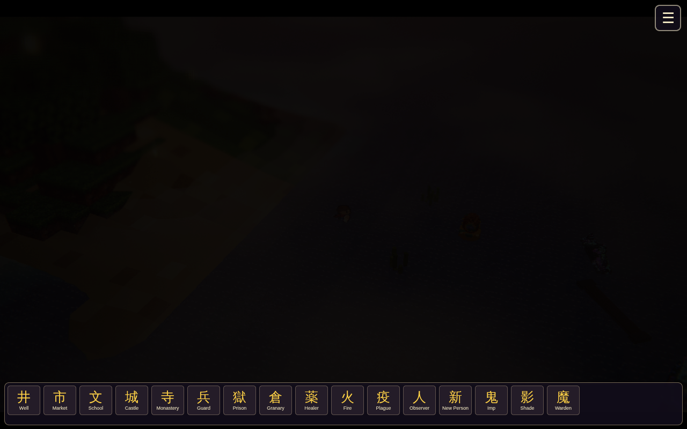
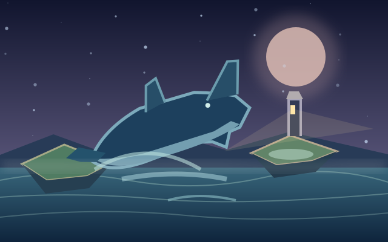
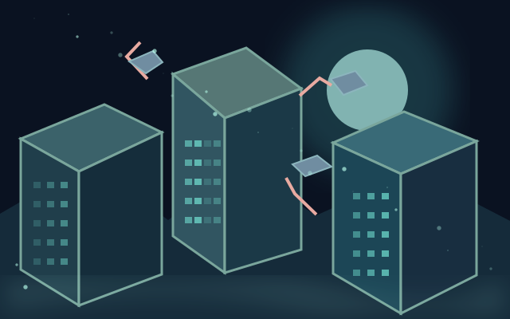

Сумерки и пепел II
Найди мистическое зерно, посади дерево жизни, поливай и защищай росток, пока мёртвый остров не оживёт.
META GAMES Lab · Авторские игры без рекламы
Исследуй сумеречные острова, забытые города и необычные миры. В этой подборке — авторские приключенческие игры META GAMES Lab, которые открываются в браузере без перехода на Playgama.

Найди мистическое зерно, посади дерево жизни, поливай и защищай росток, пока мёртвый остров не оживёт.

Живой остров со строительством, открытиями и загадочными обитателями.

Переходи границы трёх миров, исследуй их ландшафты и тайны.

Плыви по бесконечному архипелагу, избегай выпрыгивающего кита и зажигай маяки.

Путешествие через сумеречные острова и зыбкий свет.

Другая версия города с отдельной сценой и галереей.

Путешествие между слоями одного загадочного мира.
Начни с истории Зерна последнего мира, если хочешь увидеть, как оживает остров. Для исследования островов выбери Twilight Island или Twilight Isles; в Three Worlds тебя ждёт путешествие между разными мирами.
Все ссылки «Играть» ведут на версии игр в META GAMES Lab. Для подробностей о каждом мире открой его страницу или изучи историю Зерна последнего мира.